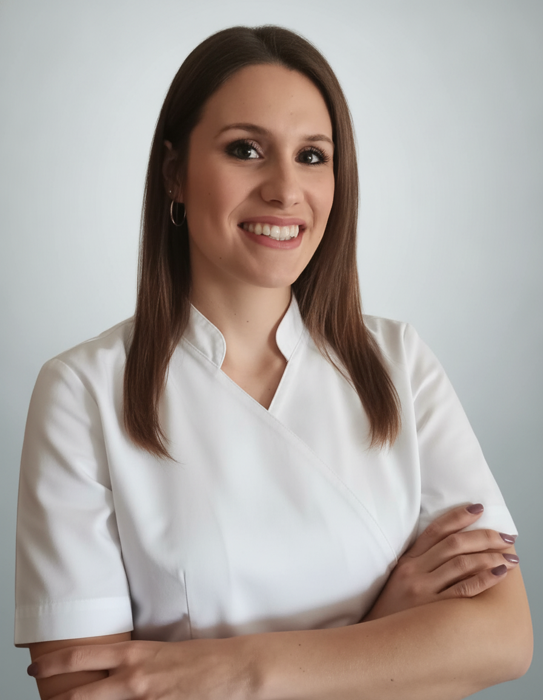

Persone che meritano la vostra fiducia
Assistenza personale da parte di specialisti esperti – con basi scientifiche, in italiano e con il cuore.
 Titolare
Titolare
dr.sc. Ivan Bedek, dr.med.dent.
Ivan Bedek guida lo studio nella seconda generazione. Come dentista con dottorato di ricerca unisce la precisione scientifica a una consulenza pacata e onesta, sempre con l'obiettivo di preservare la sostanza dentale sana invece di trattare inutilmente.
- Nato il 22.08.1979 a Zagabria; Liceo classico (diploma 1998).
- Studi in odontoiatria all'Università di Zagabria (come borsista), laurea 2004 – tesi finale: il trattamento odontoiatrico di bambini con bisogni speciali.
- Master 2010 – ricerca sul potenziale erosivo delle bevande di consumo frequente nell'adolescenza.
- 2014 studio proprio – in precedenza attivo presso la Dr.ssa Marija Bedek e il chirurgo orale Dr. Tihomir Švajhler.
- Dottorato il 12.12.2019 – standard croato per la determinazione dell'età dentale dei bambini tramite ortopantomografie digitali (OPG).
- Aggiornamento professionale e scientifico costante in patria e all'estero.
- Sposato, due figli.

Dentistadr.sc. Martina Laktić, dr.med.dent.
Martina Laktić assiste pazienti di ogni età – con una particolare sensibilità per le famiglie e una specializzazione nei trattamenti canalari. Già da studentessa faceva parte dello studio Bedek e porta oggi un'ampia esperienza clinica.
- Nata nel 1993 a Zagabria.
- Studi in odontoiatria all'Università di Zagabria, laurea 2018 – tesi finale: l'erosione dentale.
- Insignita del Premio del Preside, del Premio del Rettore per un lavoro scientifico-artistico individuale e di uno speciale Premio del Rettore.
- Già da studentessa attiva nello studio Bedek – con un'ampia esperienza clinica su tutte le fasce d'età.
- Specializzazioni: odontoiatria familiare empatica ed endodonzia (trattamento canalare).
Una tradizione familiare da oltre 30 anni. Ciò che nel 1991 è stato fondato dalla Dr.ssa Marija Bedek prosegue oggi con la stessa cura e le stesse aspettative – generazione dopo generazione, paziente dopo paziente.